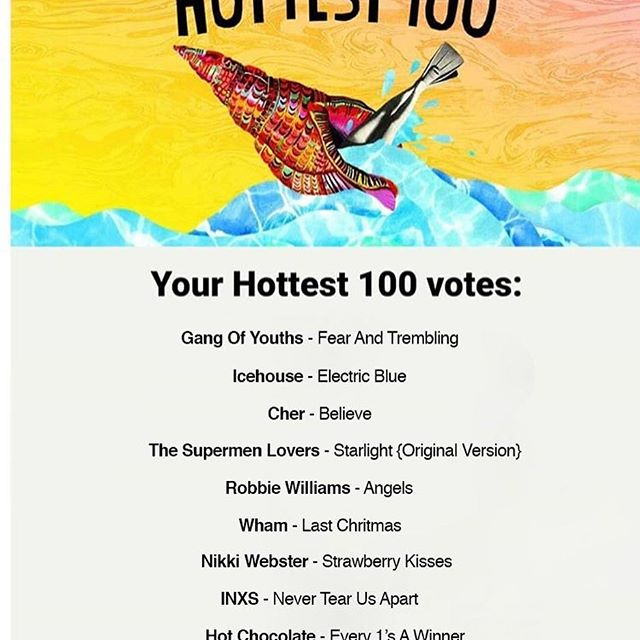

Let's do the Time Warp again!
Welcome again to Triple J Hottest 100 Facts! Last year I looked at what factors contribute to a song’s popularity. This year I want to turn the focus on you, the voting public. Following the methodology of Warm Tunas, I pulled people’s votes from Instagram to amass a data set of 2,584 ballots totalling 24,695 votes. Last year there were 2.25 million votes cast, so this represents a sample of about 1%.
To be eligible for entry into the Hottest 100 this year, a song must ‘premiere’ between December 2016 and November 2017. Triple J lists 1887 songs for you to choose from on their website, but this did not stop some impassioned aficionados from writing in their own choices. Specifically 2.5% of people voted for a song that was eligible last year. One in six people of those people voted for more than one. I even found one special person who wrote in five songs from last year. So without further ado, I present the hottest songs of 2016, as voted for in January 2018.
- Middle Kids - Edge of Town (This was covered by Paul Dempsey for Like a Version in 2017, which may explain the popularity)
- Smith Street Band, The - Death to the Lads (#21)
- Teskey Brothers, The - Pain and Misery
- Dean Lewis - Waves
- Thundamentals - Never Say Never (#168)
- Skeggs - Spring has Sprung (#170)
- Pnau - Chameleon (#11)
- Dune Rates - Bullshit (#33)
- Big Sean - Bounce Back
- Alex the Astronaut - Already Home
These people seem to have all made an honest mistake, but there are some people who don’t even care. I leave you with this gem
